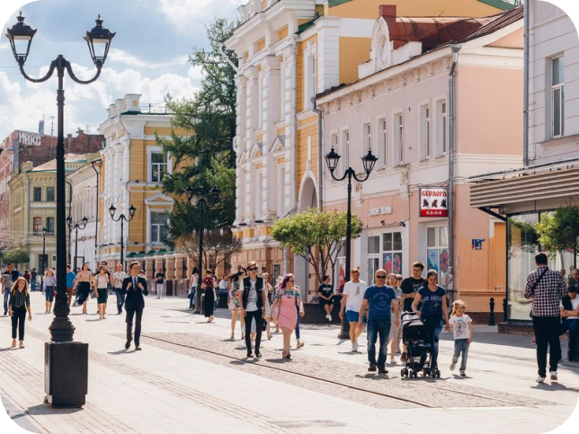

Главная улица города, на которой находятся дворянские особняки прошлых столетий. Пешеходная часть составляет 1236 метров. Включает в себя: Верхне-Посадские торговые палаты, Дом профсоюзов, театр драмы и кукольный театр, Государственный Банк и пр.